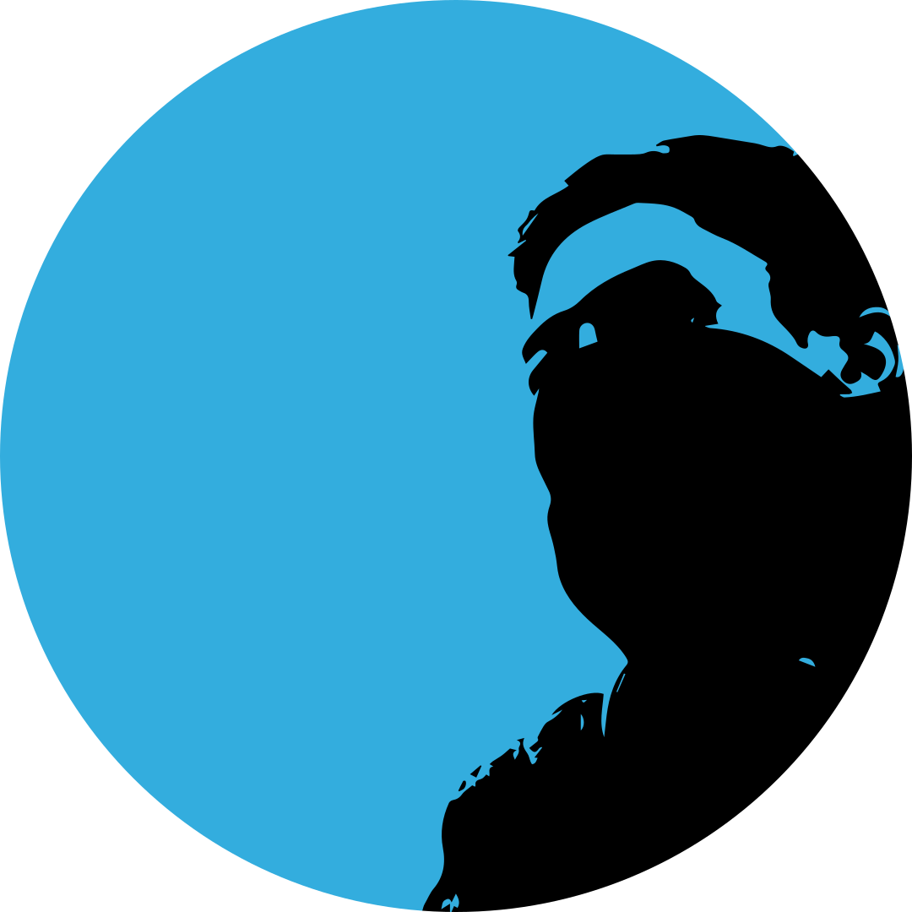

Hi! I am Andreas.
I am designing websites from code and making them a creative work.
Prologue! -->
Hello World! How are you? Hope you are doing fine. Do you know me? If you don't know, no problem, we can get acquainted. We can become close friends and share stories together. Maybe it's a lot of fun. I really enjoy my life now. I enjoy doing typewriting, design, coding, playing music and games. I am also engaged in education. My dream is that I can develop Indonesian education much better. Hopefully, you don't get bored reading a lot of this writing. Greetings for me!
Andreas Novyanto
My Life Journey
Born On November 16, 2000
In Klaten, Central Java, Indonesia.
A country boy born into a middle to lower class family.
Have a strong determination.
Always excited and likes to learn new things.
No matter what people scorn.
Always optimistic about what he achieves.
Failing is a lesson.
Always believe in God's way.
[ Thank you for visiting. This site is currently under development. Come back when we've finished. ]